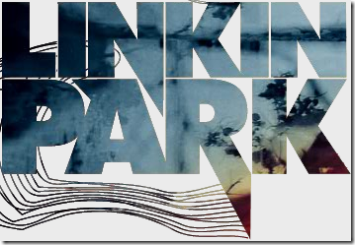
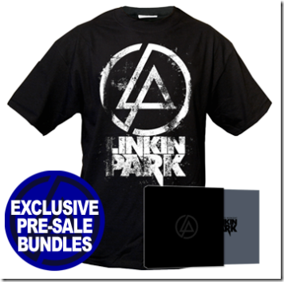

7 mai 2007
Linkin Park - Minutes to Midnight
Aujourd'hui j'ai commandé l'album :)

J'ai pris le "bundle" le plus cher qui comprend CD + DVD + Art Book de 68 pages + T-Shirt
J'ai eu l'occasion d'écouter l'album avant sa sortie et j'ai adoré :D Le groupe a vraiment évolué, l'album est vraiment différent des deux premiers. Le style neo-metal à été délaissé pour un son plutôt pop/rock cependant certaines musiques conservent leur ancien style. J'éspère que le DVD et l'Art Book seront à la hauteur, j'ai commandé ce Bundle tout d'abord car je suis vraiment fan de ce groupe mais j'aime aussi les "making of" ainsi que les visuels/photos. Si vous souhaitez écouter des extraits de leur nouvel album, le meilleur endroit est le site internet du groupe qui à été refait pour le nouvel album.
Commentaires 0
Aucun commentaire.